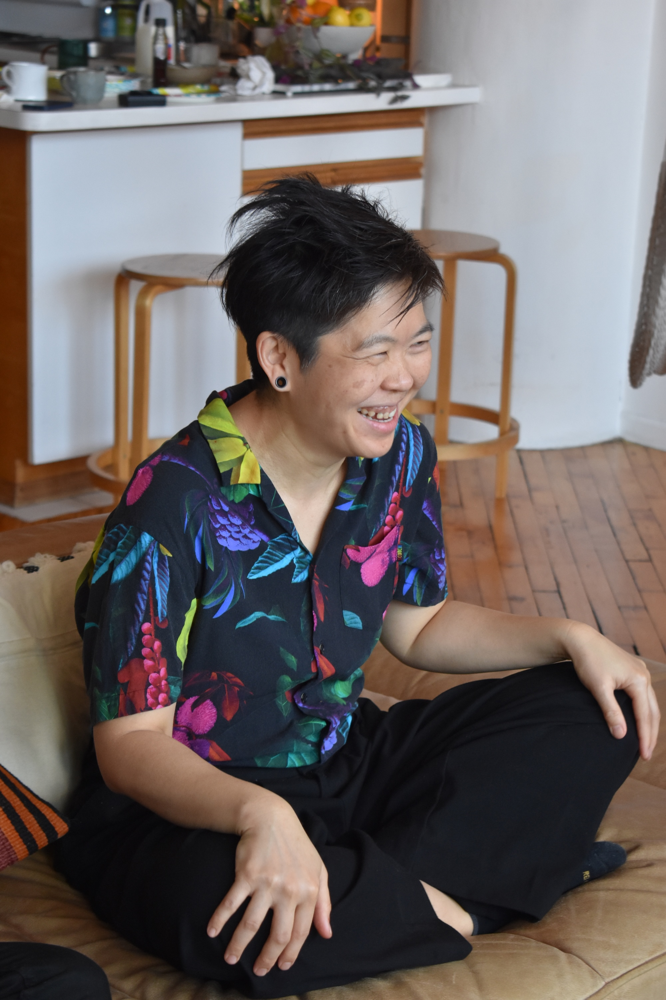
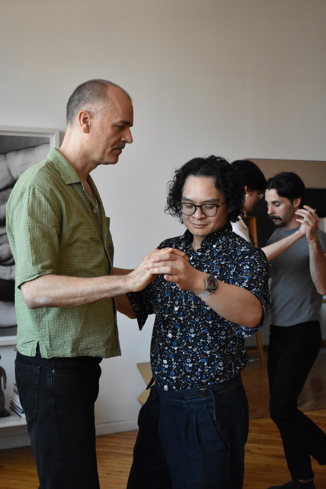
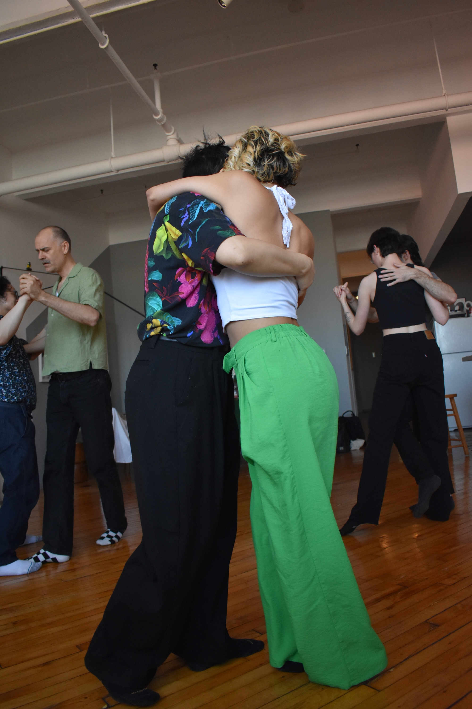
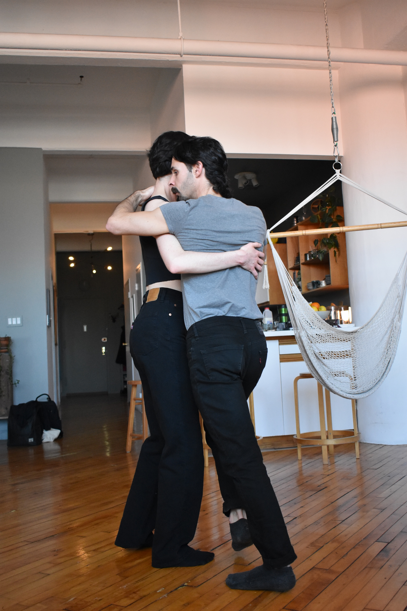
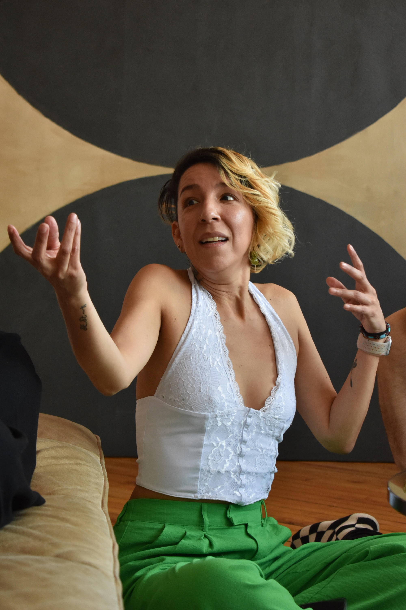
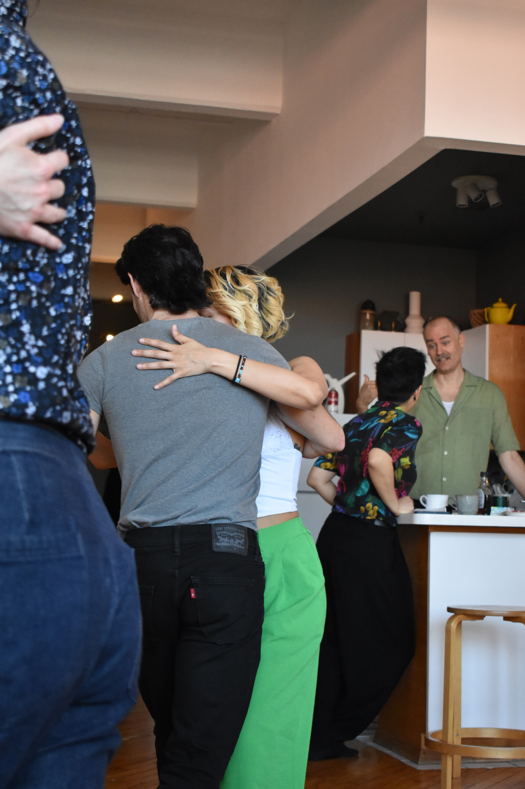

Offerings
Does tango have something particular to offer queer people?

Phi Lee
First of all, it really connects people on a very fundamental, human level. It's hard because it can backfire very easily, you know? You can either have a very transformative experience or you can have a very traumatic experience. It's that very, very fine line, but I do feel that it can be a very, very transformative experience in how we perceive ourselves and how we can empower and accept ourselves in a very deep way and [with] deep meaning. There's all this..it's nuanced, who we are as humans. We are contradictory. So [tango] allows that contact with another human being [that] can bring up a lot of questions about 'I thought this is the way I felt, this is the way I think about myself. This is my identity. But yet…' This experience with this person can bring up some contrasting experiences and ideas, and I think that always, it expands the way we perceive our identity.

Mati
Yes, without a doubt. Being a person that–I don’t really enjoy the search for the perfect word and the perfect way to write things because I feel that there are things that can’t really be put in words and sometimes we overexert ourselves trying to give them an explanation. I believe that when we dance tango what happens is what is felt and…without words. I believe that for me it’s a good way to connect without using words. It seems to me that when we dance, we communicate what we feel, how we are, what we want. It’s a body language that escapes words, that for me in particular surpasses words.

Norma
Yes, because it’s absolute conscience of your body and mind but also a vote of responsibility with other beings, and I believe that’s how life is, right? In life you have to be conscious of your mind, your body–of how you walk down the street. You can’t walk down the street hitting and pushing past people; you have to dodge, you have to…right? And in this case you have another person in front of you, regardless of whether you’re following or leading. So it’s an awareness, a self-awareness and an awareness that someone else is there and you have to take care of that person and give them the best possible experience. And that person is also conscious of the fact that I’m here, they’re listening to me, validating me, following me or proposing to me. I believe that if we approach life the way tango works, it will be much more fun and more beautiful.

Leo
I believe so. Tango, the embrace, tango is everything. Because it’s understanding and really creating space to welcome someone to be close to you. And it’s the embrace and feeling embraced. What the majority of us need is acceptance. It’s saying, “Okay, I had a horrible day” [but] it doesn’t matter [because] in that moment your head goes quiet. We embrace and the head goes “poof” and that’s it–the problems of the day, of the week, for those two minutes of dancing tango they’re cured. The embrace in tango is everything, and it’s [about] working on that. Working on allowing another person to arrive, on opening yourself for another person, on learning to receive, and also if you’re following the act of giving yourself. Making yourself available, knowing how to embrace, knowing how to arrive. It’s…communication for me is essential.

Mikael
Well, I've noticed that it's not for everybody. It's a tough dance to dance. If I didn't meet Utta and she [hadn’t] led me, I would never dance tango. If I had taken that first class and been the leader, I wouldn't have understood the beauty of the dance.
NW: And what is it about queer tango that makes you want to bring it to queer people?
Well, the connection, the beauty of it all, to experience a person in such an intimate and beautiful way, to move as one together with music and be creative and playful, and I get all these endorphins. When I dance I get a high, and if I go to a festival, I'm high for three, four days. Because I don't know a better feeling in my body. Even though I'm exhausted, and you dance till three, four in the morning every day, it's the sense of community. You feel seen also by the other person that you're dancing with. It's taking care of one another, really tuning in and seeing one another. There's a gentleness and a careness and a beauty. And why wouldn't people want to do that? [laughs]

Arty
Yes, 100%. There is something about tango—I tell people this all the time about how I felt like the gay male community is so based around clubbing, alcohol, and partying. And I experienced all that. I did all that, and I can't say that I didn't have fun, but I felt that it was very difficult for someone who was Asian-American, who was Asian, who does not have a certain body type, [and] is not, in my opinion, the most desirable person in terms of physicality.
Tango has made me feel so much happier about my body, and made me feel like it was a genuine connection that was not based around desirability but instead [around] skill and a genuine desire for emotional connection. Maybe not deep emotional connection, but there is a very big difference between seeing a person in a club and engaging with them and seeing a person at a dance class and engaging with them. The mindset, the framing, the ecosystem, the context and environment is so different. The act of dancing, prioritizing the dance, the artistry, the physicality in a way that is not based around “I think you're hot, I think you're attractive, I think you're sexy,” but instead, “I love the way you dance. I love the way you embrace me. I love the way we are holding each other. I love the way that we are having a conversation,” that I think is not sexual, but it is [a] very intimate conversation.